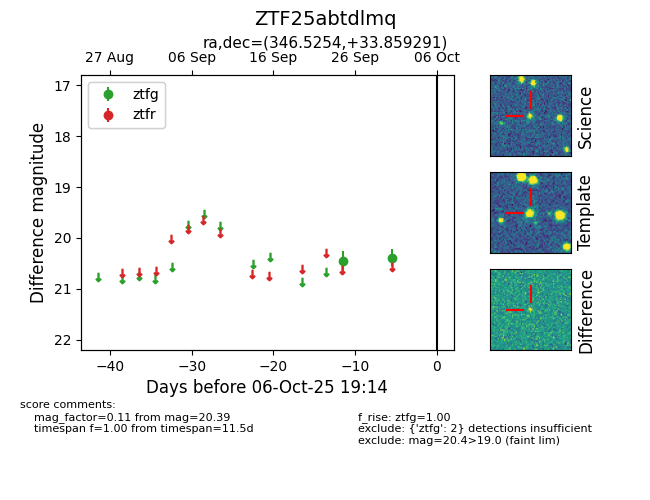

FINK: ZTF25abtdlmq
Lasair: ZTF25abtdlmq
ALeRCE: ZTF25abtdlmq
ZTF25abtdlmq (ztf,fink)
equatorial (ra, dec) = (346.5254,+33.85929)
galactic (l, b) = (99.1321,-24.09827)

last ztfg=20.39
2 ztfg detections